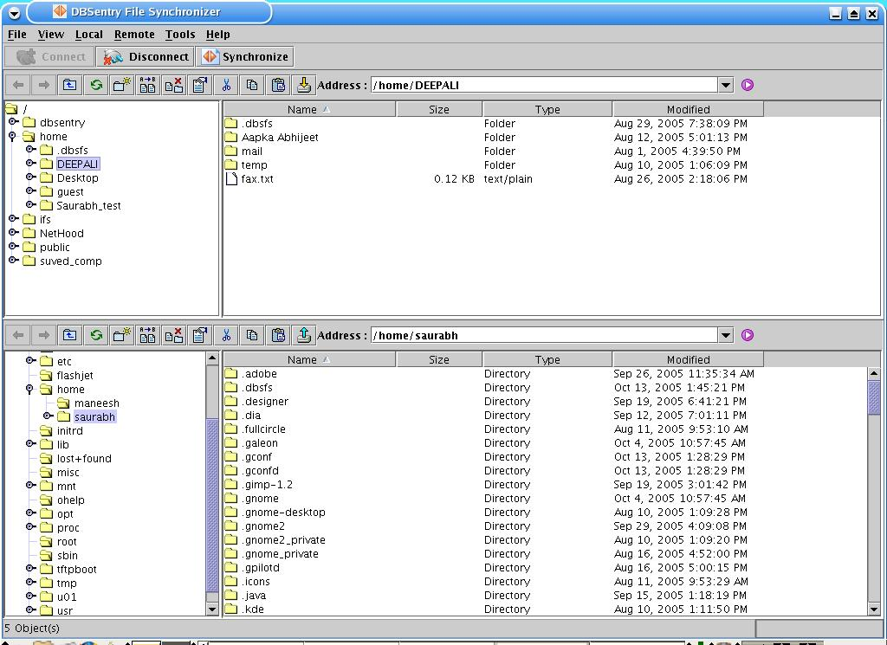

Disconnecting from server:
Click 'Disconnect' button at the FileSync startup window toolbar to disconnect from remote server.
Now you are able to reconnect with server through a different Userid and password. Disconnecting from the server clears the remote filesystem view from the remote browser.
